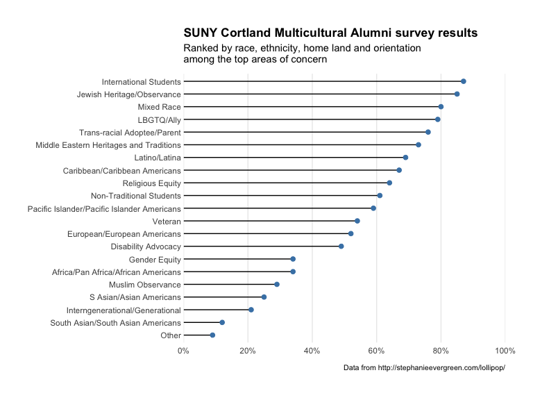

df <- read.csv(text="category,pct
Other,0.09
South Asian/South Asian Americans,0.12
Interngenerational/Generational,0.21
S Asian/Asian Americans,0.25
Muslim Observance,0.29
Africa/Pan Africa/African Americans,0.34
Gender Equity,0.34
Disability Advocacy,0.49
European/European Americans,0.52
Veteran,0.54
Pacific Islander/Pacific Islander Americans,0.59
Non-Traditional Students,0.61
Religious Equity,0.64
Caribbean/Caribbean Americans,0.67
Latino/Latina,0.69
Middle Eastern Heritages and Traditions,0.73
Trans-racial Adoptee/Parent,0.76
LBGTQ/Ally,0.79
Mixed Race,0.80
Jewish Heritage/Observance,0.85
International Students,0.87", stringsAsFactors=FALSE, sep=",", header=TRUE)
gg <- ggplot(df, aes(y=reorder(category, pct), x=pct))
gg <- gg + geom_lollipop(point.colour="steelblue", point.size=2, horizontal=TRUE)
gg <- gg + scale_x_continuous(expand=c(0,0), labels=percent,
breaks=seq(0, 1, by=0.2), limits=c(0, 1))
gg <- gg + labs(x=NULL, y=NULL,
title="SUNY Cortland Multicultural Alumni survey results",
subtitle="Ranked by race, ethnicity, home land and orientation\namong the top areas of concern",
caption="Data from http://stephanieevergreen.com/lollipop/")
gg <- gg + theme_minimal()
gg <- gg + theme(panel.grid.major.y=element_blank())
gg <- gg + theme(panel.grid.minor=element_blank())
gg <- gg + theme(axis.line.y=element_line(color="#2b2b2b", size=0.15))
gg <- gg + theme(axis.text.y=element_text(margin=margin(r=0, l=0)))
gg <- gg + theme(plot.margin=unit(rep(30, 4), "pt"))
gg <- gg + theme(plot.title=element_text(face="bold"))
gg <- gg + theme(plot.subtitle=element_text(margin=margin(b=10)))
gg <- gg + theme(plot.caption=element_text(size=8, margin=margin(t=10)))
gg